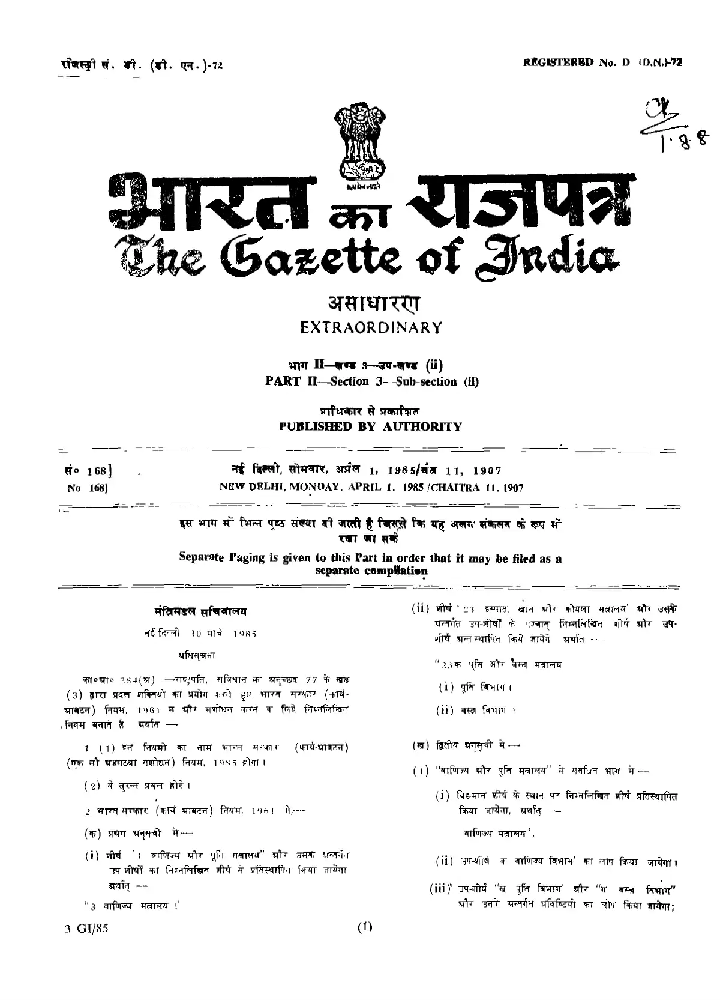
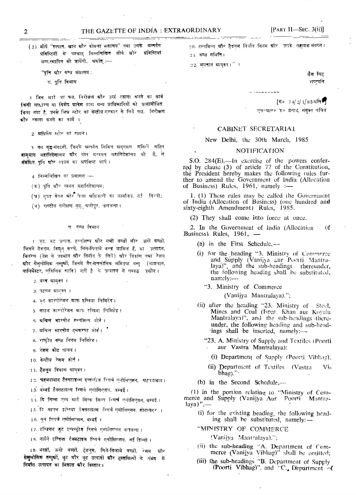
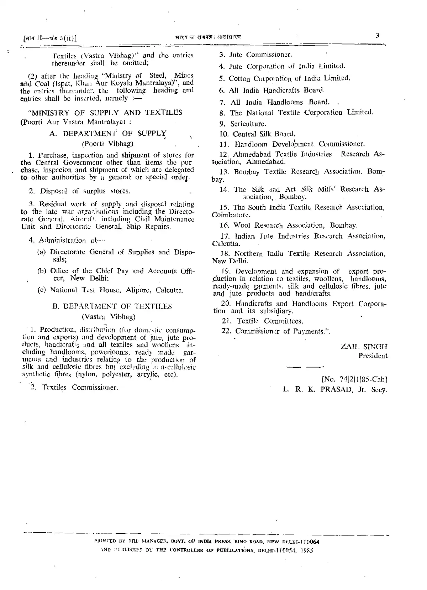

Amendment #168 (S.O. 284(E), 1985)
6 changes: 2 to the First Schedule, 4 to the Second Schedule. 5 applied1 not applied
What it did to the ministries
- splitMinistry of Commerce and Supply splits into Ministry of Commerce (38) and Ministry of Supply and Textiles (23) change 1, 2, 3, 4, 5, 6 · histories: Commerce and Supply, Commerce, Supply and Textiles
The order, page by page
Page 1 of 4

Page 2 of 4

12345Schedule 1 › Ministry of Commerce and Supply
- 3. Ministry of Commerce
applied at schedule 1 › ministry 3 in the Rules after #168
after Schedule 1 › Ministry of Steel, Mines and Coal
- 23. A. Ministry of Supply and Textiles
- i. Department of Supply
- ii. Department of Textiles
applied at schedule 1 › department 23 in the Rules after #168
new extra
Schedule 2 › Ministry of Com- merce and Supply
- MINISTRY OF COMMERCE
applied at schedule 2 › ministry MINISTRY OF COMMERCE in the Rules after #168
Schedule 2 › Ministry of Com- merce and Supply › Department of Coom- merce
not applied (the change could not be placed in the Rules as read; see How this document was read)
states inferred earlier name, states inferred loose
Schedule 2 › Ministry of Com- merce and Supply › Department of Supply; Schedule 2 › Ministry of Com- merce and Supply › Department of Textiles
applied at schedule 2 › ministry MINISTRY OF COMMERCE › department B in the Rules after #168
states inferred earlier name
Page 3 of 4

6after Schedule 2 › Ministry of Steel, Mines and Coal
- MINISTRY OF SUPPLY AND TEXTILES
- A. DEPARTMENT OF SUPPLY
- 1. Purchase, inspection and shipment of stores for the Central Government other than items the pur- . chase, inspecion and shipment of which are delegated to other authoritics by a general or special order.
- 2. Disposal of surplus stores.
- 3. Residual work of supply and disposal relating to the late war organisations including the Directorate General. Aircraft, including Civil Maintenance Unit and Directorate General, Ship Repairs
- 4. Administration of-
and 25 more
- a. Directorate General of Supplies and Disposals
- b. Office of the Chief Pay and Accounts Officcr, New Delhi:
- c. National Test House, Alipore, Calcutta.
- B. DEPARTMENT OF TEXTILES
- 1. Production, distribution (for domestic consumption and exports) and development of jute, jute products, handicrafts and all textiles and woollens including handlooms, powerlooms, ready made garments and industrics relating to the production of silk and cellulosic fibres but excluding…
- 2. Textiles Commissioner.
- 3. Jute Commissioner.
- 4. Jute Corporation of India Limited.
- 5. Cotton Corporation of India Limited.
- 6. All India Handicrafts Board.
- 7. All India Handlooms Board. .
- 8. The National Textile Corporation Limited.
- 9. Sericulture.
- 10. Central Silk Board.
- 11. Handloom Development Commissioner. 12, Abmedabad Textlie Industries. Research Association, Ahmedabad.
- 13. Bombay Textile Research Association, Bombay.
- 14. The Silk and Art Silk Mills' Rescarch Association, Bombay.
- 15. The South India Textile Research Association Coimbatore.
- 16. Wool Research Association, Bombay.
- 17. Indian Jute Industries Research Association Calcutta.
- 18. Northern India Textile Research Association New Delhi.
- 19. Development and expansion of export production in relation to textiles, woollens, handlooms ready-made garments, silk and cellulosic fibres, jute and jute products and handicrafts.
- 20. Handicrafts and Handlooms Export Corporation and its subsidiary.
- 21. Textile Committees.
- 22. Commissioner of Payments.
applied at schedule 2 › ministry MINISTRY OF SUPPLY AND TEXTILES in the Rules after #168
Page 4 of 4
How this document was read
Changes placed by an inference rule
| Change | Rule | Status | What |
|---|---|---|---|
| 4 | earlier_name | accepted | change 4: ministry Ministry of Com- merce and Supply taken for ministry MINISTRY OF COMMERCE, its name before the First Schedule renamed it |
| 4 | loose | accepted | change 4: department Department of Coom- merce taken for department DEPARTMENT OF COMMERCF, named loosely |
| 5 | earlier_name | accepted | change 5: ministry Ministry of Com- merce and Supply taken for ministry MINISTRY OF COMMERCE, its name before the First Schedule renamed it |
| 5 | earlier_name | accepted | change 5: ministry Ministry of Com- merce and Supply taken for ministry MINISTRY OF COMMERCE, its name before the First Schedule renamed it |
Known issues
| Change | Issue | Known as |
|---|---|---|
| 4 | change 4: the part's text is not what the amendment quotes | Words that differ |
From the Government of India (Allocation of Business) Rules, 1961 and their amendments, as published by the Cabinet Secretariat (cabsec.gov.in), read by orgpedia. The readings of the older scanned gazettes have known gaps.